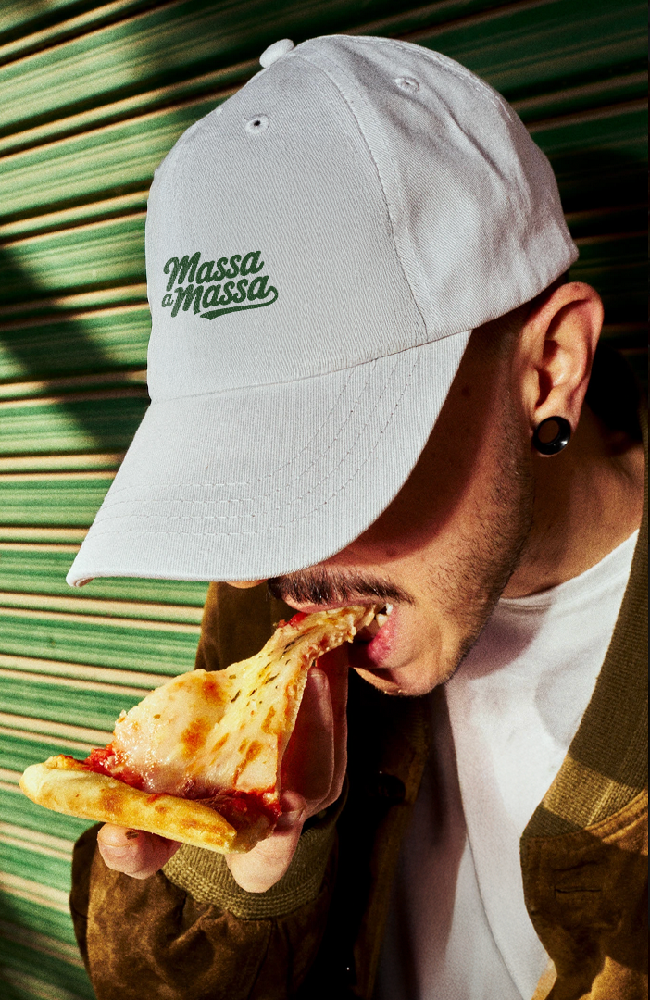

Experimente
e Avalie!

Nossa cidade é feita de encontros, e o Massa a Massa nasceu para dar um novo ritmo a esses momentos.
Durante 30 dias, selecionamos as pizzarias mais autênticas da cidade para apresentarem suas criações autorais.
Mais do que um concurso, somos uma curadoria para quem quer descobrir que a melhor experiência gastronômica de Juiz de Fora pode estar em um uma casa que você ainda não conhece.
Prepare o seu paladar.
O circuito começou.